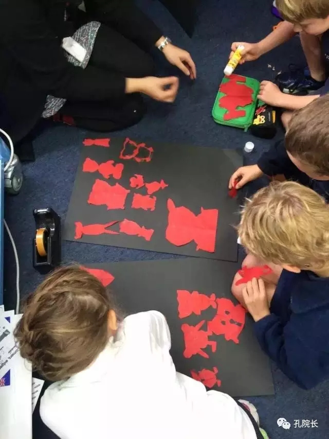

每日一篇——志愿者风采/ 新西兰，我们后会有期
 419
419
一、新西兰初印象
淘宝上有人贩卖新西兰的空气，魔戒和霍比特人在这里拍摄，爸爸去哪儿也在这里录制。在来新西兰之前，对它的初印象是“纯天然，无添加”。
2016年1月23日，我们一行新汉语教师志愿者落地新西兰。“长白云”之乡果然不是浪得虚名，大朵大朵白云悠闲地挂在天上，新鲜的空气让呼吸格外通畅。房屋是精致的平房，各家的花园被精心料理，各色的花在夏季开得如火如荼。
新西兰是个安居乐业的慢节奏国家，又以风景著称，和国内丰富多彩的室内娱乐生活不同，新西兰人的娱乐多为户外活动，比如爬山，走步道等。我的住家平时的娱乐是踢足球，生活十分规律健康。
趁着假期我在新西兰南岛自驾环游了一圈，我敢说，这里有世上最美的风景。新西兰的美，美得毫无瑕疵，壮丽而纯净。纯蓝色的Tekapo湖，绿色的Pukaki湖，频繁出现的彩虹，秋天童话故事般的箭镇，沿途随处可见的农场，可以看到银河的夜晚。对，我敢说这里有最美的风景。
绿色的Pukaiki湖
与这种纯净生活相对的，也是新西兰人简单的生活。新西兰（尤其是南岛）是少见的对物质欲望要求非常低的国家，这里没有人追逐名牌，没有人购买奢侈品。商品种类少，商场和商店更是每天下午5点就早早关门了。
来之前就听上一任志愿者说，她们穿的每一件衣服都会被当地人夸好看，还真是。国内淘宝上琳琅满目的商品，可以让新西兰当地人大呼“Amazing！ ”。我从国内带来的3D贺卡和蓝牙音箱加湿器，都让我的住家赞不绝口。
二、教学过程中的可爱瞬间
我在新西兰的基督城工作，在三所不同的小学担任汉语教师，教3到8年级的学生。
国内大人多用小孩的语气来和小孩对话，力保小孩的纯真和可爱。而新西兰的大人和小孩之间是平等对话，所以这边的小孩子情商高到令人惊讶。有时候看着他们小小的身躯用大人的语气说话，我又觉得忍俊不禁。
在这一年的教学过程中，有很多可爱的瞬间，或是感动、或是好笑、或者惊讶。
场景一：有一次在教室上课，起身的时候不小心撞到头，我已经做好了迎接轰然大笑的准备，然而教室里却没有一个人在笑，离我近的学生都非常担忧的皱着眉头问我“Are you ok?”。这个班是五年级。那一瞬间我的内心五味杂陈，又非常感动。他们那么小，但我却常常有被他们照顾到的感觉。
场景二：有一节课在4年级讲中国的大好河山，放了一些我在各个地方旅行的照片。突然有一个女生举手提问“Autumn, are you a super star in China？”我回答说当然不是呀，她紧接着说“But in my world you are！
场景三：在三年级的课堂上教他们唱两只老虎，一边放儿歌，一边教他们跳舞。突然一个小女孩一脸迷妹状热泪盈眶地说“Why everything is soooo cute?Why everything is just toooo cute？”
场景四：在八年级上课，我说，上节课我们学习了：you在汉语里是nǐ, 那么your在汉语里是什么呢？一男孩激动地举手，一直喊nir, nir, nir……
孩子们有时候在汉语课上会因为觉得自己做的不够好而沮丧，所以课堂上也会有我抚慰孩子们心灵的瞬间。

三年级剪的小熊猫
场景五：教三年级熊猫剪纸，他们很小，在手工方面还很笨拙，有些孩子剪出来觉得不像熊猫，跑过来很沮丧的问我，“我是不是剪得很不好啊（用英文）” ，我回答他们说，不会啊，我觉得你剪得非常完美，因为你付出了努力在做它，这是一只属于你自己的小熊猫，是这个世界上独一无二的小熊猫。他听完之后开心地跑开了。
场景六：文化课上教他们水墨吹画（用吸管把纸上的墨水吹成梅树），有个女生过来说她没有吹好，因为树干底下也不小心吹分叉了。我告诉她，我倒是觉得分叉的地方很像树的根，很有创意。她突然豁然开朗“That’s a good idea!”，然后又找我要了几滴墨水把根部吹出来了。
三、 新西兰教师的高明之处
和国内不同，在新西兰小学，每个老师负责一个教室，负责教授所有的科目。我观摩过本地老师的一些课，我惊讶于他们将道德教育贯穿始终的能力，这点让我十分折服。
有一次汉语课上，大家都在专心的写字，他们老师就说“It is very impressive when you concentrate on something”。有人说话的时候，老师会说随便讲话是一件非常没礼貌的事情，让人非常disappointed。他们批评或表扬的时候，都会表达学生的行为给自己带来的内心感受，而不仅仅是告诉他们，这样做是不对的。不得不说，这种方法非常高明，因为有一个不可否认的事实是：每个人都在意自己给别人带来的感受。
这种细微的不同看似很不容易察觉，但其实非常奏效。身为一名教育学的学生，我偷偷做了这样一个小实验：8年级这个年龄，青春期，有些男孩喜欢在课堂上捣乱以此装帅耍酷。我就有这样一个学生。以前他每次说话我都是提醒他或批评他不要再说了，但每次他过一会又会再犯。有一次，我换了一种说法：Could you please show some respect while I’m talking？这句话很快就奏效了，那一次，他对我说了sorry。
这就是语言的魅力和教学的技巧，这是新西兰的老师给我带来的一点非常重要的启发。
四、新西兰的相处之道
在这里，女生之间手挽手会被当做“蕾丝边”。我非常赞同作家刘瑜所说的，外国人重视“privacy”，我们重视“intimacy”，他们注重隐私和距离，我们重视亲密度。
在国内我们常常放肆地开玩笑，调侃对方，因为我们“亲密”，所以我们不介意。但是外国人，虽然他们也开玩笑，但很注重尺度，玩笑过分他们会觉得很刻薄。
我住在当地居民的家里，住家是结婚几十年的老夫妻，女儿和儿子大概和我一样大。然而他们“相敬如宾”。例如女主人想让电视声音小一些，会问男主人“Could you please turn it down a little bit?”谢谢和对不起之类的话，更是家常便饭了。
这点对我们来说是要去努力适应的一点，对我们来说可能会觉得“太客气”，“永远走不进对方的内心”。但转念想想，这种互相尊重的感觉，让我们自由，没有人会评价你做什么决定。这种仪式感，也可以给害羞的中国人怎样更好地表达感情。
旅行的意义
五、旅行记
就我目前的经历来说，新西兰是我见过最适宜旅游的国家！风景自是不用提，我们来谈谈消费。如果选择自驾的话，租车一天折合人民币大概一两百。有了车，在新西兰更是想去哪就去哪，但是要注意新西兰是左侧驾驶，且沿途很多山路，开车一定要小心，每年都有很多中国游客在新西兰发生车祸。不会开车的话，可以选择坐大巴。
YHA国际青年旅社的环境很好，它们提供娱乐厅，厨房，电视房等等设施，价格一晚上也是一两百人民币左右。可以到超市买到各类肉（肉类在这边都很便宜），然后带回YHA自己做饭，在YHA还会遇见一些来自不同国家的人，和他们进行交流是件很愉快的事情。
前辈们设计出来了很多环岛游的经典路线，顺着路线走，有世上最好的风景。
六、 后记
一年的时光犹如白驹过隙，匆匆过去了。这一年无疑是我生命中最宝贵的一年。
汉语教学在新西兰欣欣向荣，越来越多有远见的学校开了汉语课。汉语课和汉语老师给他们带的感官冲击和他们过去的经历很不同，学生每次都会为上汉语课而感到兴奋和期待，这也是让我最为宽慰的事情。
在新西兰工作的一年，我得以跳出原来的生活圈子，走到外面来，看看这个世界上有那么一群人，他们和你过着完全不同的生活。让我知道生活不是一条单行道，我们也不是只有一条生活轨迹可循。
同时，这一次出来对我来说也是一次“爱国教育”。这一年我办过很多文化活动，不仅对当地人传播了中国文化，自己也对中国文化有了更深刻的认识。过去我们对中国文化“习以为常”, 知道文化现象但从来不思考文化的源头，“只缘身在此山中”让我们在中华文化的迷雾中迷迷糊糊地过了这么些年。直到自己要把这些文化教出去之后，才真切地体会到了中华文化的博大精深和源远流长。
身为学生，在孔院工作的一年也算是我工作的第一年，我非常庆幸第一份工作是在孔院。
今年刚刚离任的胡院长和刚刚上任的江院长带领整个团队开展大大小小的事务，井井有条。坎特伯雷大学孔子学院负责整个新西兰南岛的工作，院长和老师不仅要处理分布在南岛各个地方的志愿者的教学事务，负责和各个学生的校长联系开汉语课之外，每年在南岛各地举行的文化活动也是不断的，有时候为了去另一个地方甚至要开8小时的车才能到达，十分不容易。但每次活动，我们都是全力以赴，装备齐全。每次举办的活动都受到当地人的热烈欢迎。
除了文化活动，孔院还积极开展比赛，如汉语桥、书法比赛、作文比赛，每年还花很多力气举办Prize-giving奖励当年在汉语学习的优秀学生。孔院这种全力以赴为汉语文化传播的精神非常令人感动，院长们常年都很忙，经常工作到很晚。在新西兰这样安逸知足的国家，中国人的拼搏精神和奉献精神更是显得尤其耀眼和珍贵。中国赋予了我们珍贵的品质。
这一年，我经历过学生带来的感动，风景上的震撼，文化上的冲击，个人能力的提升，价值观的改变，都将化为一颗颗晶莹透亮的珍珠，被我小心地藏在记忆的盒子里。新西兰，我们后会有期。
箭镇的秋
作者简介：
梁爽，华中科技大学教育科学研究院研究生，2016年1月至2016年12月在新西兰坎特伯雷大学孔子学院担任汉语教师志愿者，任教于基督城的三所小学。